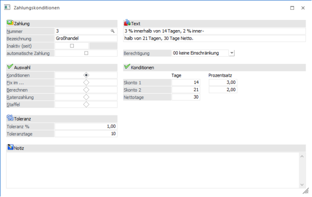
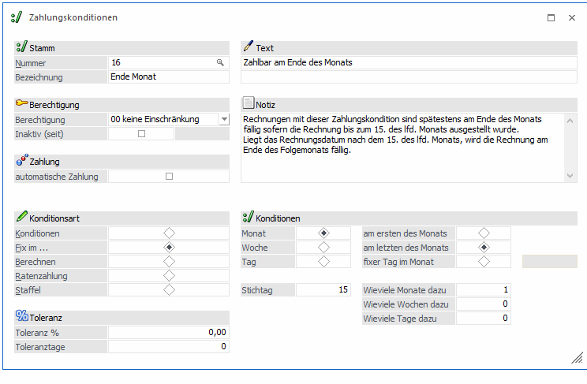
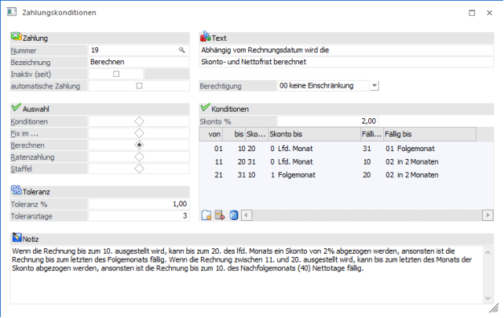
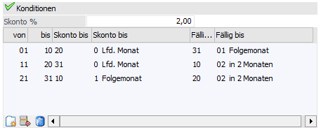
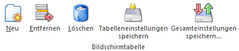
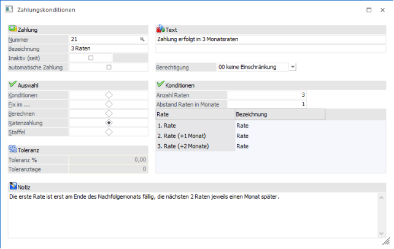
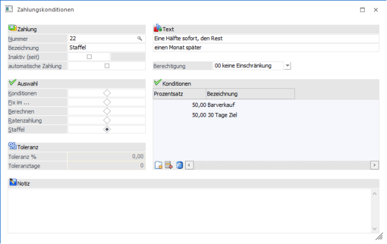
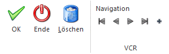
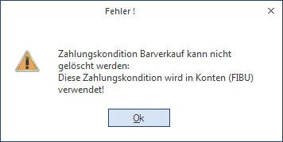

Im Menüpunkt
1 Stammdaten
1 Mandantenstammdaten
1 Zahlungskonditionen
können beliebig viele Zahlungskonditionszeilen erfasst werden, die jedem Personenkonto bzw. bei jedem Interessenten beliebig zugeordnet werden (im Programmpunkt Stammdaten/Konten/Personenkonten bzw. WinLine FAKT/Stammdaten/Konten/Interessenten).
Dabei gibt es verschiedene Möglichkeiten, Zahlungskonditionen zu definieren:
ü Kondition
Es kann eine 3stufige
Zahlungskondition hinterlegt werden
ü Fix im ...
Damit kann ein
Fälligkeitsdatum (ohne Skonto) berechnet werden.
ü Berechnen
Es kann genau
eingestellt werden, im welchem Zeitraum welche Fälligkeit vorhanden ist.
ü Ratenzahlung
Der Betrag wird in
frei definierbare Raten aufgeteilt, die mit eignen Zahlungskonditionen versehen
werden.
ü Staffel
Der Betrag wird
prozentuell aufgeteilt und mit verschiedenen Zahlungskonditionen versehen.

Je nachdem, welche Art der Zahlungskondition verwendet wird, können auch unterschiedliche Eingabefelder bearbeitet werde, einige Felder sind aber immer gleich:
Ø Nummer
Hier kann entweder eine bestehende Zahlungskondition aufgerufen werden, oder aber auch eine neue Zahlungskondition angelegt werden. Um eine bestehende Zahlungskondition aufzurufen, gibt es mehrere Möglichkeiten:
ü Eingabe der
Zahlungskonditionennummer
Sofern die Zahlungskonditionsnummer bekannt ist,
kann die Nummer direkt eingegeben und mit ENTER bestätigt werden - die
Zahlungskondition wird dann direkt aufgerufen.
ü Suche mit Matchcode
Über die
Matchcode-Funktion (F9-Taste) kann nach allen angelegten Zahlungskonditionen
gesucht werden.
ü Autovervollständigung
Im Feld
Nummer kann auch ein Teil der Zahlungskonditionsbezeichnung eingegeben werden,
in einer kleinen Auswahllistbox werden dann alle gefundenen Zahlungskonditionen
angezeigt und können von dort übernommen werden.
ü Neueingabe
Wird im leeren
Eingabefeld die EINGABE-Taste betätigt, kann eine neue Zahlungskondition
angelegt werden. Dazu wird dann die Nummer in "NEUEINGABE" umgewandelt und auch
die Bezeichnung wird auf "NEUEINGABE" gestellt, die entsprechend geändert werden
muss. Die Zahlungskonditionsnummer wird dann erst beim Speichern vergeben.
Ø Bezeichnung
In diesem Feld kann eine max. 25stellige Bezeichnung der Zahlungskondition eingegeben werden. Diese Bezeichnung wird in weiterer Folge auch in allen Datensätzen angezeigt, wo die Zahlungskondition verwendet wird.
Achtung:
Eine Zahlungskonditionsbezeichnung kann nur einmal vergeben werden, d.h. die Bezeichnung muss eindeutig sein.
Ø Inaktiv
Wenn ein Datensatz auf Inaktiv gesetzt wird, wird gleich neben der Checkbox das Datum angezeigt, an dem die Zahlungskondition auf Inaktiv gesetzt wurde. Das hat vorerst nur die Auswirkung, dass die Zahlungskondition nicht mehr im Matchcode angezeigt wird. Durch einen Reorg kann dieser Datensatz aus der Datenbank entfernt werden. Voraussetzung dafür ist, dass für den Datensatz keine Bewegungsdaten (Buchungen etc.) vorhanden sind. Nähere Informationen zum Reorganisieren entnehmen Sie bitte dem WinLine START-Handbuch.
Ø Automatische Zahlung
Ist diese Checkbox aktiv, wird in der Fakturierung bei der Erfassung einer Faktura automatisch in das Register Zahlung gewechselt, in dem eine Zahlung zu der Faktura eingegeben werden kann, die auch in die Finanzbuchhaltung übergeben wird. Gebucht wird auf das Konto, das in der Zahlungsart hinterlegt wurde (siehe Kapitel Zahlungsarten im WinLine Fakturierung Handbuch)
Ø Text
Pro Konditionenzeile stehen zwei Bezeichnungszeilen zur Verfügung, die z.B. in der Belegbearbeitung (WinLine FAKT) angedruckt werden können.
Ø Berechtigung
Für jede Zahlungskondition kann ein Berechtigungsprofil vergeben werden. Wenn der Anwender eine Zahlungskondition aufruft, wird geprüft, ob der Anwender einer Benutzergruppe zugeordnet wurde, welche in dem jeweiligen Profil enthalten ist und ob somit eine Bearbeitung erlaubt wäre (nähere Informationen entnehmen Sie bitte dem WinLine ADMIN - Handbuch).
Hinweis
Benutzern des Typs "Administrator" oder mit der Administratorenberechtigung "Benutzeradministrator" steht in der Auswahlbox der Punkt ">> Neues Profil" zur Verfügung. Über die Anwahl dieses Eintrags kann in der Folge ein neues Berechtigungsprofil angelegt werden.
Ø Toleranz %
Eingabe des Toleranzprozentsatzes für den Skontobetrag.
Beispiel
Über die Buchungsschnittstelle wird eine Debitorenzahlung eingelesen. Der Kunde hat eine Faktura über € 5.320,-- mit Abzug von € 120,-- Skonto bezahlt. Er hätte sich allerdings nur 2 % (d. s. € 106,40) Skonto abziehen dürfen. Mit dem Toleranzprozentsatz wird entschieden, ob der Skonto genehmigt wird, oder ob die Faktura als nicht ausgeglichen in den Offenen Posten bestehen bleibt.
Ø Toleranztage
Eingabe der Toleranztage, innerhalb derer der Skonto noch akzeptiert wird.
Beispiel
Eine Faktura kann bis zum 15. Mai mit 2 % Skonto beglichen werden. Der Kunde zahlt die Rechnung aber erst am 20. Mai und zieht sich den Skonto trotzdem ab. Durch die Toleranztage wird entschieden, wie lange der Kunde die Skontofrist überziehen darf. Daraus resultiert dann, ob die Faktura ausgeglichen wird oder ob der Skontobetrag als Forderung bestehen bleibt.
Achtung
Die Felder "Toleranz %" und "Toleranztage" können nur bei den Zahlungskonditionsarten "Konditionen", "Fix im ..." und "Berechnen" hinterlegt werden.
Hinweis
In der Belegart im Register Zahlungen kann definiert werden, welche Zahlungsarten erlaubt sind!
Ø Notiz
In diesem Feld kann eine beliebig lange Notiz zu dieser Zahlungskondition erfasst werden. Diese Notiz kann bei Bedarf (z.B. in der Belegerfassung) angedruckt werden.
Nachdem die einzelnen Zahlungskonditionsarten unterschiedliche Eingabefelder haben, werden nachfolgen die einzelnen Arten im Detail beschrieben.
Konditionen
Zahlung in x Tagen mit x Prozent Skonto oder in x Tagen Netto ohne Skontoabzug.
Dazu muss in der Rubrik "Auswahl" die Option
Ø Konditionen
verwendet werden. Danach können folgende Felder bearbeitet werden:
Ø Skontoprozentsatz
Eingabe des Skontoprozentsatzes, es können bis zu 2 verschiedene Prozentsätze hinterlegt werden
Ø Skontotage
Eingabe der Skontofrist in Tagen, es können bis zu 2 Skontofristen verwaltet werden
Ø Nettotage
Eingabe der Netto-Zahlungsfrist in Tagen.
Fix im ...
Zahlbar an einem fixen Datum
Diese Option wird verwendet, wenn das Fälligkeitsdatum an eine bestimmte Regel gebunden wird, z.B. "jede Rechnung ist fällig am Monatsende, außer sie wurde nach dem 15. des laufenden Monats ausgestellt".
Sobald die Option "Fix im …" aktiviert ist, kann gewählt werden, in welchem periodischen Abstand vom Rechnungsdatum die Faktura fällig wird (Monat, Woche, Tag) - und je nachdem, welche Periode angewählt wurde, kann dazu der entsprechende Fälligkeitstermin (Montags, oder immer der 10. des Monats, oder am Monatsletzten, etc.) eingegeben werden.
Achtung
Wird als Fälligkeit ein fixer Tag im Monat eingegeben, z.B. der 30. des Folgemonates, wird natürlich bei einer Buchung im Januar nur bis zum letzten Tag im Februar gerechnet.

Soll ab einem bestimmten Stichtag eine Periode weitergerechnet werden, wird zuerst der Stichtag angegeben. Danach werden so viele Tage / Wochen / Monate - je nachdem, welche Periode gewählt wurde - hinzugezählt, so dass sich eine neue Periode als Fälligkeit ergibt (siehe Beispiel: Ist die Rechnung ab dem 15. des Monats ausgestellt worden, soll die Fälligkeit erst am Monatsletzten des Folgemonats gesetzt werden).
Berechnen
Berechnung der Skonto- und Fälligkeitstage
Anhand des Rechnungsdatums (in welchem Zeitraum liegt das Rechnungsdatum) wird definiert, wie lange Skonto gewährt wird und wie viele Fälligkeitstage verwendet werden dürfen. Nach Auswahl der Option "Berechnen" stehen folgende Felder zur Verfügung:

Ø Skonto %
Eingabe des Skontoprozentsatzes, der für diese Zahlungskondition gelten soll.
Durch Anklicken des NEU-Buttons () in der Tabelle können neue Zeilen eingegeben werden, in denen dann folgende Felder bearbeitet werden können.
Ø Von - bis
Hier wird der Zeitraum angegeben, in dem diese Zeile Gültigkeit hat.
Achtung
Bei der Angabe des Zeitraumes muss darauf geachtet werden, dass alle Tage des Monats verwendet werden. Ist das nicht der Fall, wird beim Speichern eine entsprechende Meldung angezeigt:
Bei der Angabe des Zeitraumes ist aber auch darauf zu achten, dass es keine Überschneidungen (Zeitraum wird doppelt definiert) gibt. Ist das der Fall, wird ebenfalls eine entsprechende Meldung ausgegeben.
Ø Skonto bis Tag / Monat
Hier wird eingegeben, bis wann der Skonto in Anspruch genommen werden kann, wobei im ersten Feld das Datum (z.B. 20 steht für den 20sten, 31 steht für den Letzten) und im zweiten Feld das Monat eingegeben wird. Bei der Angabe des Monats kann zwischen "Lfd. Monat", "Folgemonat" und in "2 Monaten" aus der Auswahllistbox gewählt werden.
Ø Fällig bis Tag / Monat
Hier wird angegeben, wann die Fälligkeit der Rechnung erreicht ist. Im ersten Feld wird das Datum eingegeben (z.B. 20 steht für den 20sten, 31 steht für den Letzten), im zweiten Feld wird das Monat eingetragen. Für die Monatsauswahl steht eine Auswahllistbox zur Verfügung, in der das laufende und die nächsten 12 Monate angeboten werden. Nettotage werden immer vom Rechnungsdatum weg gerechnet.
Das Ergebnis der Eingaben lässt sich anhand des Beispiels wie folgt zusammenfassen:

Wenn die Rechnung zwischen dem 1. und 10. eines Monats gestellt wird, dann kann bis zum 20. des laufenden Monats der Skonto abgezogen werden, ansonsten ist die Rechnung am Letzten des Folgemonats fällig.
Wenn die Rechnung zwischen dem 11. und 20. eines Monats gestellt wird, dann kann bis zum letzten des laufenden Monats der Skonto abgezogen werden, ansonsten ist die Rechnung am 10. des Folgefolgemonats fällig.
Wenn die Rechnung zwischen dem 21. und dem Letzten eines Monats gestellt wird, dann kann bis zum 10. des Folgemonats der Skonto abgezogen werden, ansonsten ist die Rechnung bis zum 20 Folgefolgemonats fällig.
Beispiele für die Berechnung der Zahlungskonditionen bei Verwendung obiger Einstellungen:
Rechnungsdatum 3.8.
Skontofrist ist der 20.8. (20. des laufenden Monats)- also sind das 17 Skontotage
Nettofrist ist der 30.9. (letzte des Folgemonats) - das sind dann 58 Tage
Rechnungsdatum 17.8.
Skontofrist ist der 31.8. (letzte des laufenden Monats) - das sind 14 Skontotage
Nettofrist ist der 10.10. (der 10. des Folgefolgemonats) - das sind 54 Tage
Rechnungsdatum 25.8.
Skontofrist ist der 10.9. (10. des folgenden Monats) - das sind 16 Skontotage
Nettofrist ist der 20.10. (der 20. des Folgefolgemonats) - das sind 56 Tage
Tabellenbuttons

Ø Neu
Es kann eine neue Zeile in die Tabelle eingefügt werden.
Ø Entfernen
Es können einzelne Zeilen aus der Tabelle gelöscht werden.
Ø Löschen
Es werden alle vorhandenen Zeilen aus der Tabelle gelöscht.
Ø Tabelleneinstellungen speichern
Die Spalten einer Tabelle können grundsätzlich an beliebige Positionen verschoben, bzw. in der Breite entsprechend angepasst werden. Durch Anwahl des Buttons "Tabelleneinstellungen speichern" werden die Einstellungen benutzerspezifisch gespeichert und bei dem nächsten Aufruf des Programmpunktes wieder vorgeschlagen.
Ø Gesamteinstellungen speichern
Im Gegensatz zu "Tabelleneinstellungen speichern" können mit "Gesamteinstellungen speichern" mehrere Tabellenaufbauten gespeichert und nach Wunsch geladen werden. Zusätzlich werden Sonderfunktionen der Tabelle (z.B. "Spalte gruppieren") ebenfalls bei der Speicherung bedacht.
Ratenzahlung
Der Rechnungsbetrag wird auf mehrere Raten aufgeteilt.
Bei der Ratenzahlung erfolgt die Aufteilung in mehrere (Teil-)Beträge, wobei jeder Teil eine eigene Zahlungskondition bekommen kann.
Achtung
Bei dieser Variante wird für die Berechnung der Nettotage immer das Rechnungsdatum + die Anzahl der Monate + die Nettotage der jeweiligen Zahlungskondition verwendet.

Nach Auswahl der Option "Ratenzahlung" können folgende Felder bearbeitet werden:
Ø Anzahl Raten
Hier muss die Anzahl der Raten eingegeben werden, in die der Rechnungsbetrag aufteilt werden soll.
Ø Abstand Raten in Monate
Hier muss die Anzahl der Monate eingegeben werden, die zwischen den einzelnen Raten liegen sollen.
Wenn diese zwei Eingaben bestätigt werden, dann wird in der Tabelle die Anzahl der Raten gefüllt, wobei bei jeder Rate die Anzahl der Monate mit angezeigt wird. In der rechten Spalte kann nun die Jeweilige Zahlungskondition hinterlegt werden (kann auch immer die gleich sein).
Beispiel für Ratenzahlung
Es gibt 3 Raten, die Ratenzahlung erfolgt monatlich.
Bei allen 3 Raten wir die gleiche Zahlungskondition hinterlegt, die folgende Einstellungen hat:
Wenn die Rechnung zwischen dem 1. und Letzten eines Monats gestellt wird, ist die Rechnung am Letzten des Folgemonats fällig.
Die Rechnung wird mit 27.8. ausgestellt.
Die erste Rate wird am letzten des Folgemonats, also am 30.9. fällig, das sind 34 Nettotage.
Die zweite Rate wird am letzten des Folgemonats + 1 Ratenmonat, also am 31.10. fällig, das sind 65 Nettotage.
Die dritte Rate wird am letzten des Folgemonats + 2 Ratenmonate, also am 30.11. fällig, das sind dann 95 Nettotage.
Staffelkondition
Der Rechnungsbetrag wird prozentuell auf mehrere Teilbeträge aufgeteilt.
Bei der Staffelkondition gibt es die Möglichkeit, Fälligkeiten prozentuell aufzuteilen, z.B. die erste Hälfte fällig Sofort, die zweite Hälfte fällig nach 6 Monaten.

Um diesen Effekt zu erreichen, geben Sie durch Drücken des Buttons "NEU" () so viele Staffelzeilen ein, wie Sie benötigen. In jeder Staffelzeile bestimmen Sie durch Eingabe des Prozentsatzes, wie viel vom Fakturenbetrag fällig gestellt werden soll. Durch die Eingabe der gewünschten Konditionenzeile daneben (Feld "Bezeichnung") verknüpfen Sie den Prozentsatz mit einer bestimmten Fälligkeit. Damit sind alle Varianten von Fakturenkonditionen wie z.B. "erstes Drittel sofort, zweites Drittel am Ende des Folgemonats und letztes Drittel nach drei Monaten einfach zu automatisieren.
Achtung
Es ist darauf zu achten, dass in dieser Tabelle keine Einträge mit irgendwelchen Prozenten ohne hinterlegter Zahlungskondition vorhanden sind. Außerdem muss die Summe der Prozentsätze 100 ergeben. Ist das nicht der Fall (> 100 oder < 100) wird eine entsprechende Fehlermeldung ausgegeben:
Tabellenbuttons
Ø Neu
Es kann eine neue Zeile in die Tabelle eingefügt werden.
Ø Entfernen
Es können einzelne Zeilen aus der Tabelle gelöscht werden.
Ø Löschen
Es werden alle vorhandenen Zeilen aus der Tabelle gelöscht.
Ø Tabelleneinstellungen speichern
Die Spalten einer Tabelle können grundsätzlich an beliebige Positionen verschoben, bzw. in der Breite entsprechend angepasst werden. Durch Anwahl des Buttons "Tabelleneinstellungen speichern" werden die Einstellungen benutzerspezifisch gespeichert und bei dem nächsten Aufruf des Programmpunktes wieder vorgeschlagen.
Ø Gesamteinstellungen speichern
Im Gegensatz zu "Tabelleneinstellungen speichern" können mit "Gesamteinstellungen speichern" mehrere Tabellenaufbauten gespeichert und nach Wunsch geladen werden. Zusätzlich werden Sonderfunktionen der Tabelle (z.B. "Spalte gruppieren") ebenfalls bei der Speicherung bedacht.
Buttons

Ø Ok
Durch Anklicken des OK-Buttons bzw. durch Drücken der F5-Taste werden alle Änderungen gespeichert.
Ø Ende
Durch Anklicken des ENDE-Buttons bzw. durch Drücken der ESC-Taste werden alle Änderungen verworfen und das Fenster wird geschlossen.
Ø Löschen
Durch Anklicken des LÖSCHEN-Buttons bzw. durch Drücken der Tastenkombination ALT+L wird der aktuelle Datensatz gelöscht. Dabei wird geprüft, ob die Zahlungskondition ggf. noch irgendwo in Verwendung ist. Ist das der Fall, wird eine entsprechende Meldung ausgegeben

und die Zahlungskondition kann nicht gelöscht werden.
Über die sogenannte VCR-Buttonleiste () kann durch Mausklick oder mit der Tastatur zwischen den Datensätzen geblättert werden. Damit auf diese Weise auch Daten kontrolliert und geändert werden können, kann mit der Tastenkombination SHIFT + F5 eine Zwischenspeicherung der Daten (Daten werden gespeichert, der Inhalt in den Masken bleibt aber bestehen) durchgeführt werden.
ü  Damit kann der erste Datensatz angesprochen werden (Tastatur STRG + SHIFT +
POS1).
Damit kann der erste Datensatz angesprochen werden (Tastatur STRG + SHIFT +
POS1).
ü  Damit kann der vorherige Datensatz angesprochen werden (Tastatur SHIFT -
[numerischer Ziffernblock]).
Damit kann der vorherige Datensatz angesprochen werden (Tastatur SHIFT -
[numerischer Ziffernblock]).
ü  Damit kann der nächste Datensatz angesprochen werden (Tastatur SHIFT +
[numerischer Ziffernblock]).
Damit kann der nächste Datensatz angesprochen werden (Tastatur SHIFT +
[numerischer Ziffernblock]).
ü  Damit kann der letzte Datensatz angesprochen werden (Tastatur STRG + SHIFT +
ENDE)
Damit kann der letzte Datensatz angesprochen werden (Tastatur STRG + SHIFT +
ENDE)
ü  Damit wird die nächste freie Nummer für die Neuanlage gesucht.
Damit wird die nächste freie Nummer für die Neuanlage gesucht.